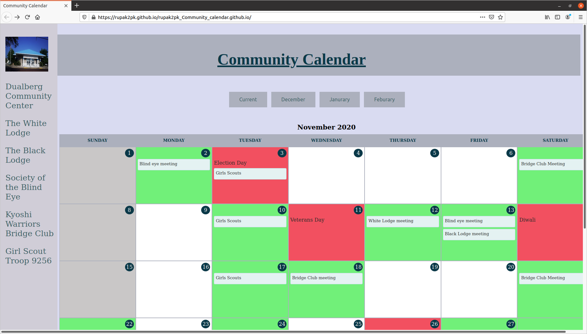

Rupak Kannan
Hi! My name is Rupak Kannan. I was a senior that used to study at Francis Howell North at the time of this website's creation but now either study at Missouri Science and Technology or a transfer student at
a big school. My hobbies include: Volleyball, home-made weightlifting, and talking walks outside. I am a avid workaholic that likes to complete his projects to its fullest and really enjoys the subject: Math.
Former Student for 2 years at......
Rupak has demonstrated excellent coding skills during his two years as my student. He has also become a class leader and has demonstrated a commitment to integrity and work ethic that any employer would be happy to have.
Experienced in....
 |
|---|
Projects
Autovaluer for Truman investment fund - Github
Auto-valuation is a program for the Truman Besief Program that takes financial statements for a company from Morningstar and valuates the information to recieve financial information (debt, profit, etc) about certain companies such as AAPL and MSFT. The video shown is currently an unfinished prototype.
Valuation Builder significantly cut down the number of manual inputs our analysts had to do. The fully-automated program cut down our valuation time from hours to minutes.
Websites
Dualberg Community Website - Github
 Dualberg Community Website is a fictional community center. The site is made up of places from popular media. This website was done as an assignment for Lewis and Clark.